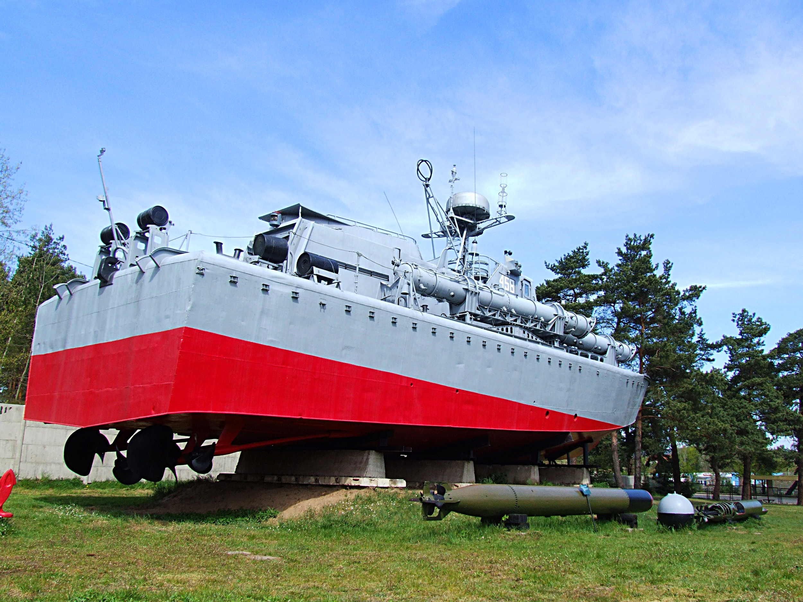

Muzeum im. Orła Białego
Muzeum regionalne w Skarżysku-Kamiennej, w województwie świętokrzyskim, utworzone w 1969 roku. Miasto Skarżysko-Kamienna ma tradycję produkcji amunicji i uzbrojenia. Poza ekspozycją w budynku muzealnym obejmuje prawie 2 ha ekspozycji plenerowej, na której wystawiony jest głównie sprzęt wojskowy.